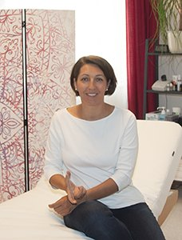

Elisabeth Schwarz-Blamauer
Hebamme mit Herz und klinischer Erfahrung – seit 2012 selbständig in meiner Hebammenordination in Gföhl.

Meine Ausbildung zur Hebamme habe ich an der Ignaz-Semmelweis-Frauenklinik in Wien absolviert. Nach meiner Zeit in Wien zog es mich zuerst in das Krankenhaus Tulln und nach der ersten Karenz in das Krankenhaus Krems, während ich gleichzeitig schon freiberuflich tätig war.
Dankbar für die Erfahrungen im Klinikbereich und nach der Geburt meiner beiden Söhne habe ich mich 2012 in die reine Selbständigkeit gewagt – und es bis heute nicht bereut. Meine Hebammenordination in Gföhl ist mein Herzensprojekt. Ich empfinde es als großes Privileg, nach meinen Vorstellungen arbeiten zu dürfen.
Neugierig geworden, was mir bei der Begleitung „meiner Frauen“ noch hilfreich sein könnte, habe ich zusätzliche Ausbildungen in APM, Narbenentstörung, HARA, Homöopathie und energetischen Methoden absolviert.
Ganzheitliche Begleitung
Meine Begleitung sehe ich ganzheitlich. Es gibt kein Standardkonzept, sondern eine Betreuung, die individuell auf die jeweilige Situation und die persönlichen Bedürfnisse von Mutter und Kind abgestimmt ist.
Neues Leben in sich zu spüren bedeutet eine große Veränderung und Herausforderung im Leben einer Frau, einer Familie. Mit jeder Geburt wird ein neues Kapitel Familiengeschichte aufgeschlagen. Als Mutter von zwei Söhnen kann ich das persönlich gut nachvollziehen. Daher ist es mir sehr wichtig, dass werdende Familien in dieser besonderen Lebensphase ihren Wünschen entsprechend umsichtig und liebevoll betreut werden.
Ich freue mich sehr darauf, ein Stück gemeinsam mit euch zu gehen!
Zusatzausbildungen
APM
AkuPunktMassage nach Penzel – ausgebildet bei Günther Hankowetz (Österreich) und an der Penzel Akademie, Heyen (Deutschland)
Narbenentstörung
Ausgebildet nach dem Liedler-Konzept bei Michaela Liedler, Wien, und an der Penzel Akademie (Deutschland)
HARA
Die professionelle manuelle Arbeit mit den Bauch- und Beckenorganen – Fortbildung bei Mag. Anja Bader, Innsbruck
Homöopathie
CHIRON – Bildungs- und Gesundheitszentrum für Klassische Homöopathie, Werner Schade (Cunewalde, Deutschland)
Energetische Methoden nach Thaddäus Starek
Ausgebildet bei Thaddäus Starek und Dr. Slawomir Sówka (Seeboden, Techendorf am Weißensee und Wien)
Ich freue mich auf ein persönliches Kennenlernen.
Termine nach telefonischer Vereinbarung.